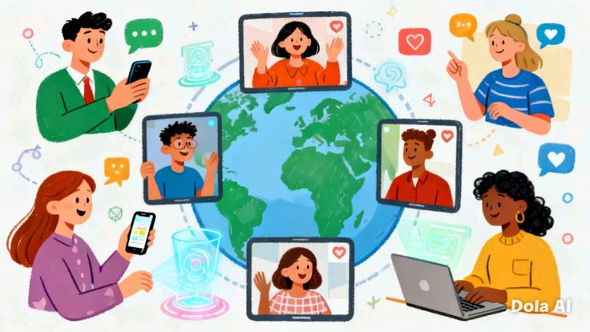

Las tecnologías web en la comunicación.
Las tecnologias web permiten comunicarnos con otras personas mediante redes sociales, correos electronicos y vieollamadas
Ejemplos de comunicacion mediante tegnologias web
- Video Llamadas
- Redes Sociales
- Correo Electronico

Impacto de las tegnologias web - 2026